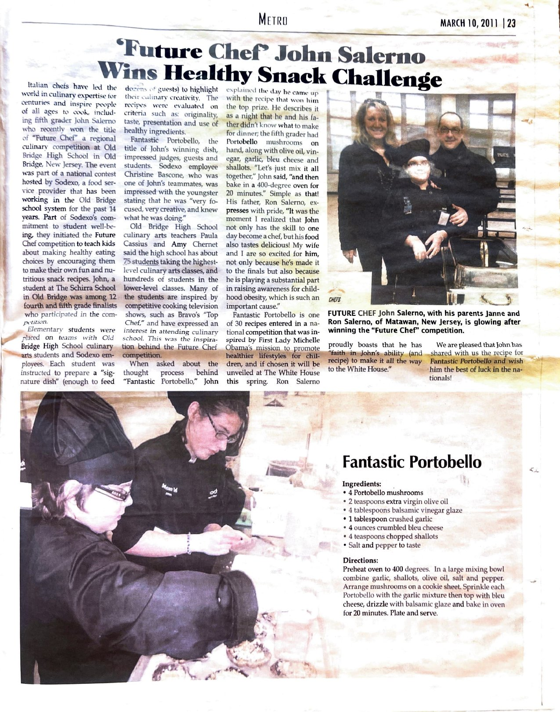

Signature
Fantastic Portobello
Winning recipe, Sodexo/Old Bridge H.S. “Future Chef” competition — featured in The Italian Tribune, March 10, 2011.
In 2011, as a fifth grader at The Schirra School, John entered the “Future Chef” competition at Old Bridge High School — a national contest, inspired by Michelle Obama’s push for healthier eating, that challenged kids to invent their own healthy signature dish.
This one won. It made the local paper, complete with a very serious chef's coat.

Ingredients
- 4 portobello mushrooms
- 2 teaspoons extra virgin olive oil
- 4 tablespoons balsamic vinegar glaze
- 1 tablespoon crushed garlic
- 4 ounces crumbled bleu cheese
- 4 teaspoons chopped shallots
- Salt and pepper, to taste
Method
- Preheat oven to 400°F.
- In a large mixing bowl, combine the garlic, shallots, olive oil, salt, and pepper.
- Arrange the mushrooms on a cookie sheet, gill-side up.
- Sprinkle each portobello with the garlic mixture, then top with crumbled bleu cheese.
- Drizzle with balsamic glaze.
- Bake for 20 minutes. Plate and serve.